GUIA DO UTILIZADOR - CHORDFLOW
1. MENU PRINCIPAL
O ChordFlow ajuda músicos a organizar repertórios, editar músicas, importar cifras e usar a app com conforto em ensaios e atuações.
Adicionar Música: Criar uma nova música de raiz.Importar Músicas: Trazer conteúdo por ficheiro, texto colado, link ou OCR.Repertórios: Abrir as tuas coleções de músicas.Afinador: Aceder ao afinador integrado.
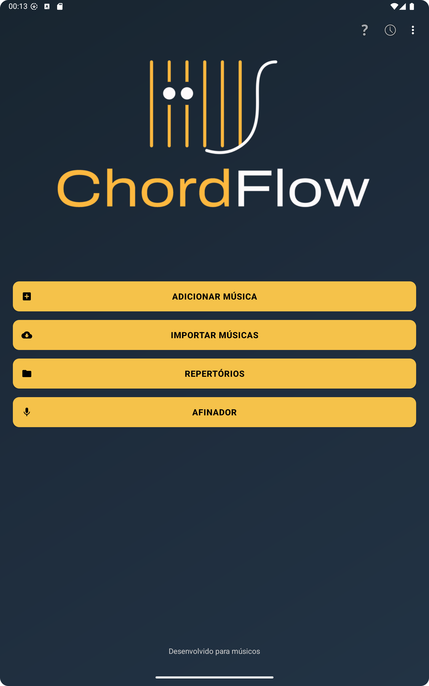
O menu principal dá acesso rápido à criação de músicas, importação, repertórios e afinador.
2. REPERTÓRIOS
O ecrã de repertórios é onde organizas as tuas coleções de músicas.
Ver todos os repertórios criados.
Tocar no botão amarelo + para criar um novo repertório.
Abrir um repertório para ver as músicas que contém.
Pressionar prolongadamente um repertório para aceder a opções extra, como eliminar ou exportar.
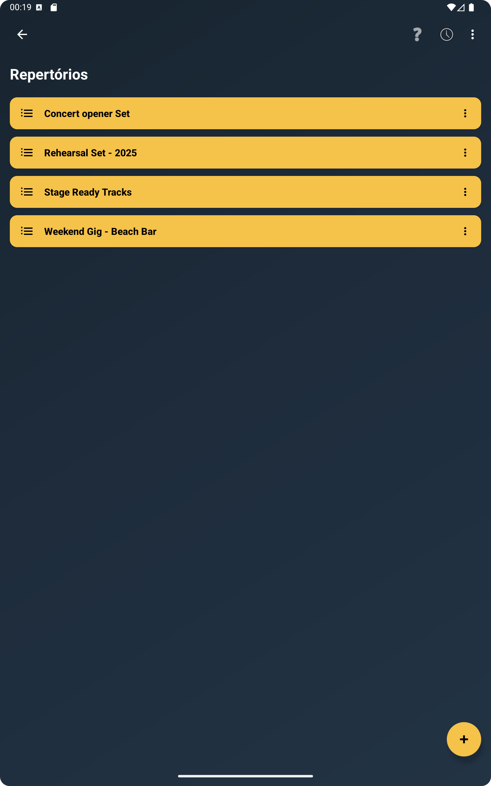
Os repertórios ajudam-te a manter as músicas organizadas e prontas para abrir em palco.
3. LISTA DE MÚSICAS
Depois de abrires um repertório, vês a lista de músicas que pertencem a esse conjunto.
Usa a pesquisa para encontrar rapidamente uma música.
Toca numa música para a abrir.
O botão + permite adicionar novas músicas ao repertório.
Podes reorganizar ou gerir a lista conforme o teu fluxo de palco.
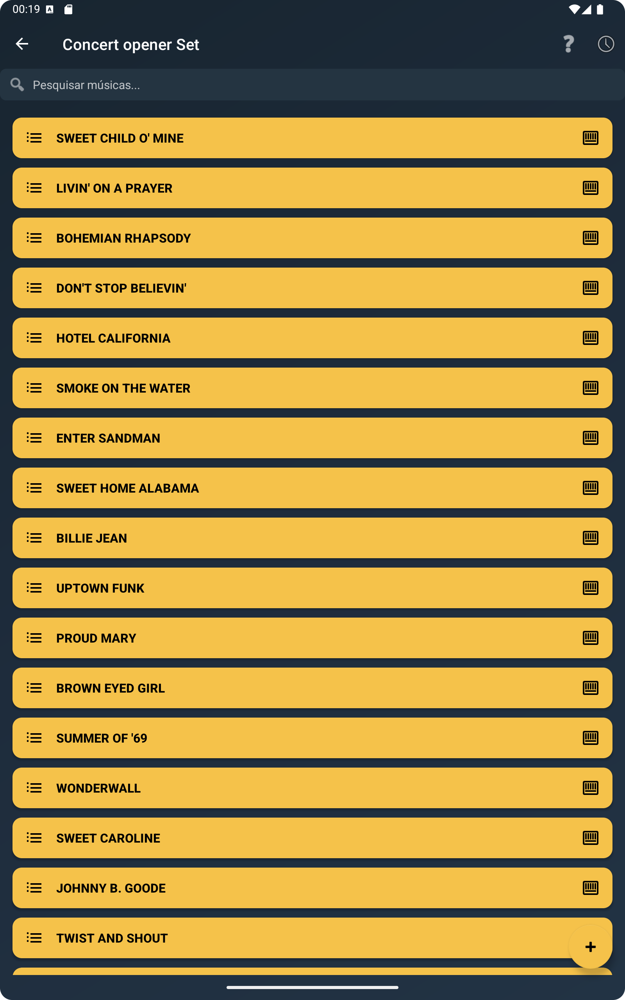
A lista de músicas mostra todas as faixas do repertório ativo com acesso rápido à pesquisa e adição.
4. ADICIONAR UMA MÚSICA
No menu principal, toca em Add Song para escolher o formato que queres criar.
Add Chords by Section: Para músicas organizadas por introdução, verso, refrão, ponte e outras secções.Add Lyrics with Chords: Para letras com a linha de acordes alinhada por cima das palavras.
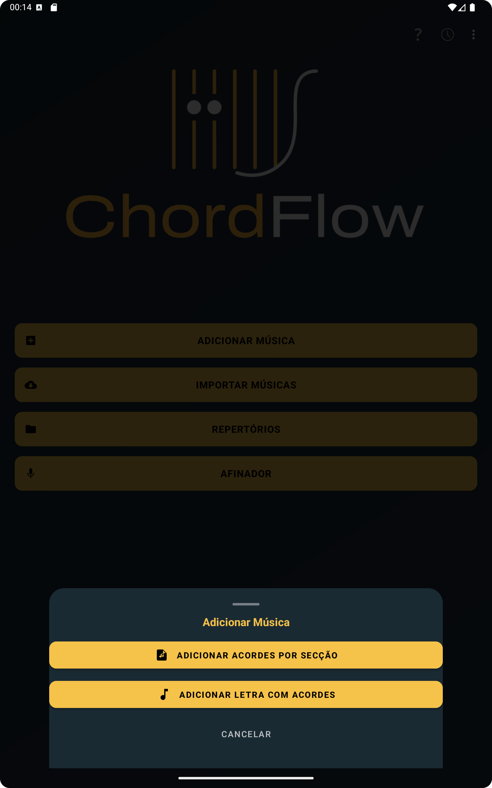
Podes escolher entre uma música por secções ou uma música com letra e acordes.
5. ECRÃ DE EDIÇÃO POR SECÇÕES
Usa o editor por secções quando queres uma apresentação limpa, com blocos de acordes separados por partes da música.
Introduz o título da música.
Define o tom original, como C, D ou Am.
Adiciona secções como Intro, Verse, Chorus ou Bridge.
Mais tarde podes pressionar prolongadamente as secções para editar ou remover.
Toca em Save Song para guardar tudo.
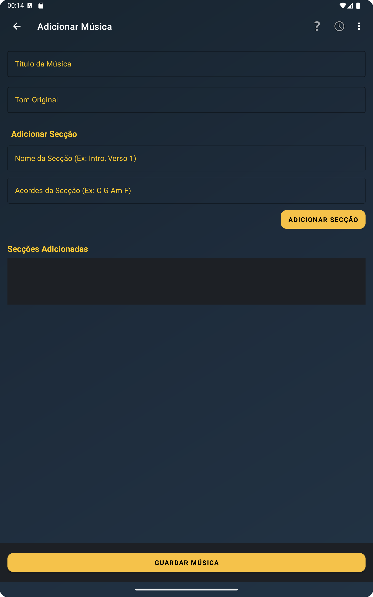
O editor por secções é ideal para montar progressões de acordes por parte da música.
6. ECRÃ DE VISUALIZAÇÃO DA MÚSICA
Este é o principal ecrã de performance, onde o ChordFlow mostra a música pronta a ler e tocar.
Desliza verticalmente para percorrer a música completa.
Belisca com dois dedos para aumentar ou diminuir o zoom.
Toca duas vezes para repor o zoom.
Desliza da esquerda para a direita para voltar ao ecrã anterior.
Toca em Transpose para mudar o tom de imediato.
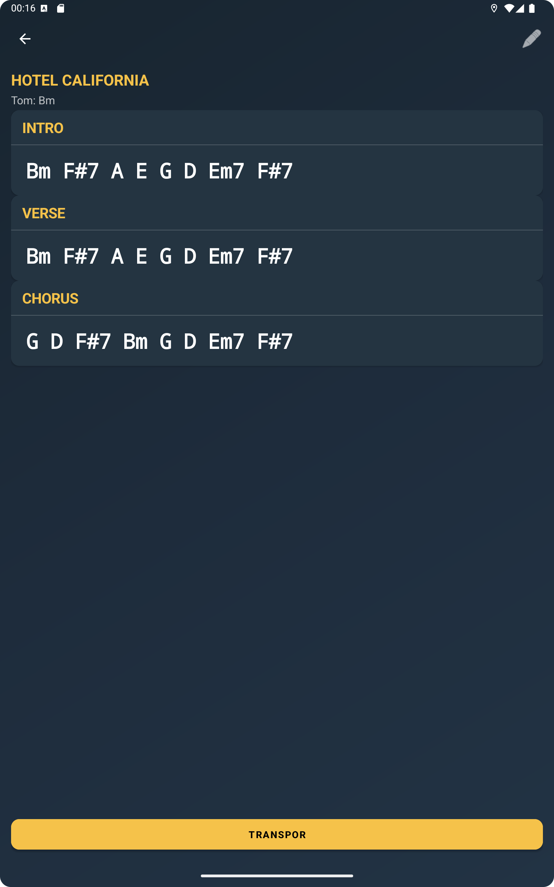
O ecrã de visualização mostra secções e acordes num formato pensado para leitura rápida.
7. MODOS DE VISUALIZAÇÃO
Dentro da visualização da música, podes alternar entre diferentes layouts consoante o dispositivo e a forma como preferes ler.
Auto view: Deixa a app escolher automaticamente a melhor apresentação.Classic view: Mantém o aspeto mais tradicional da cifra.Responsive view: Ajusta o layout para facilitar a leitura em diferentes tamanhos de ecrã.
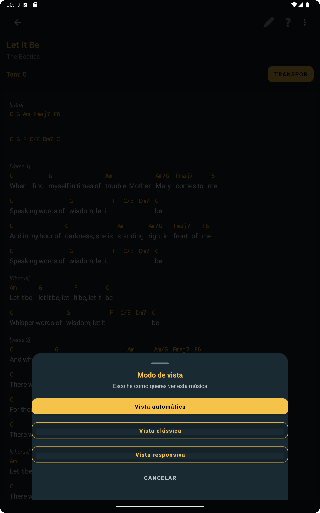
Altera o modo de visualização para ler a música com mais conforto em ensaio ou atuação.
8. TRANSPOSIÇÃO DE TOM
O ChordFlow consegue transpor as músicas para diferentes vozes, instrumentos ou posições de capo.
Abre uma música no ecrã de visualização.
Toca em Transpose .
Ajusta o número de semitons.
Escolhe sustenidos ou bemois quando essa opção estiver disponível.
Aplica a alteração e continua a tocar.
A transposição é especialmente útil quando precisas de adaptar uma música rapidamente sem editar o conteúdo original.
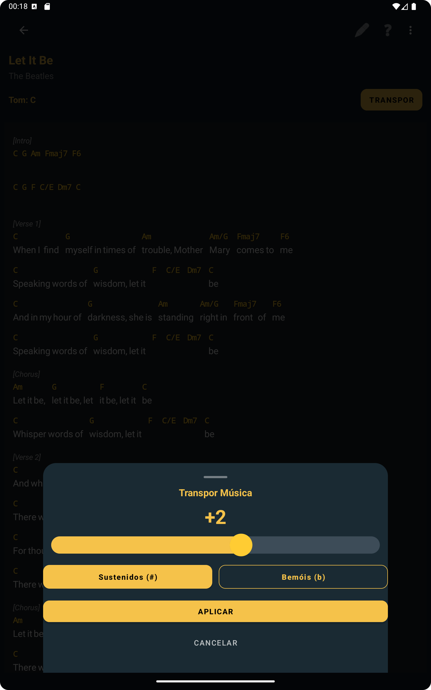
A janela de transposição permite subir ou descer o tom da música em segundos.
9. MÚSICAS COM LETRA E ACORDES
O ChordFlow também suporta músicas em que a linha de acordes fica diretamente por cima da letra.
Toca no botão + ou escolhe Add Song .
Seleciona Add Lyrics with Chords .
Preenche título, artista e tom da música.
Escreve as linhas de acordes a começar por um ponto ..
Usa colchetes para marcar secções, como [Verse] ou [Chorus].
Toca em Save Song .
[Verse]
. C G Am F
Imagine there's no heaven
. C G Am F
It's easy if you try
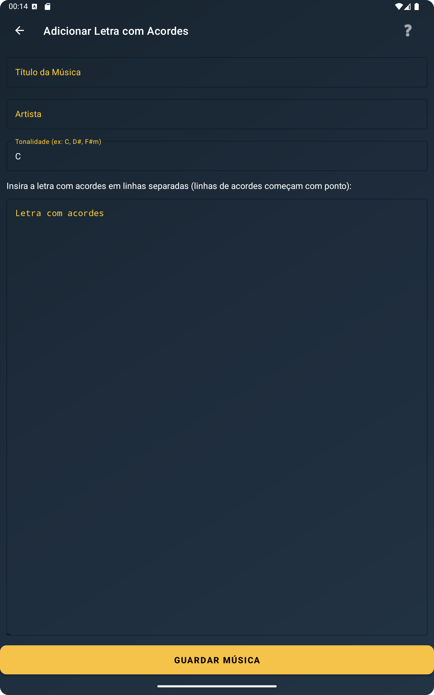
Editor para introduzir título, artista, tom e linhas de letra com acordes.
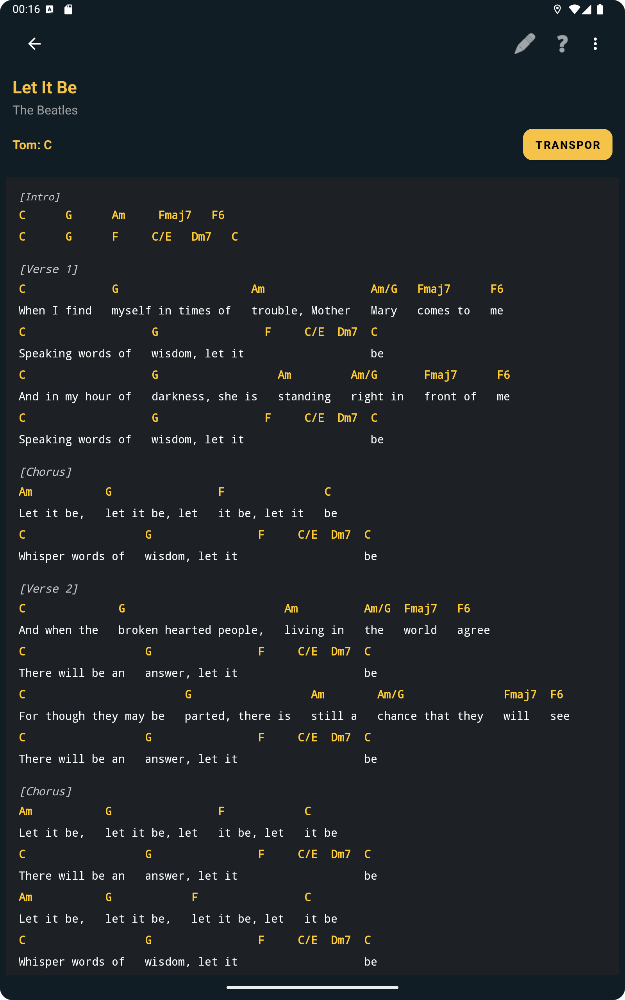
Depois de guardada, a música aparece num formato legível e preparado para palco.
10. VISUALIZAÇÃO DE ACORDES PARA GUITARRA E PIANO
Quando o acorde está disponível no visualizador, o ChordFlow pode mostrar a sua forma na guitarra e as notas correspondentes no piano.
Toca num acorde dentro da visualização da música para abrir a janela do acorde.
Alterna entre os separadores Guitar e Piano .
Percorre as posições, voicings ou inversões disponíveis.
Usa Listen Chord para ouvir o acorde quando essa função estiver disponível.
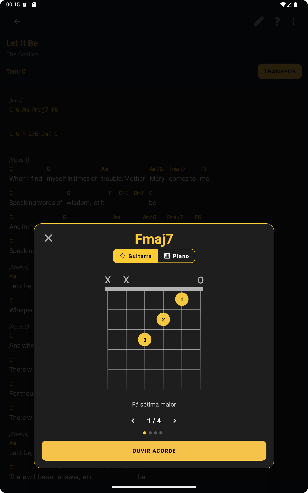
O visualizador mostra a digitação do acorde na guitarra com as posições marcadas.
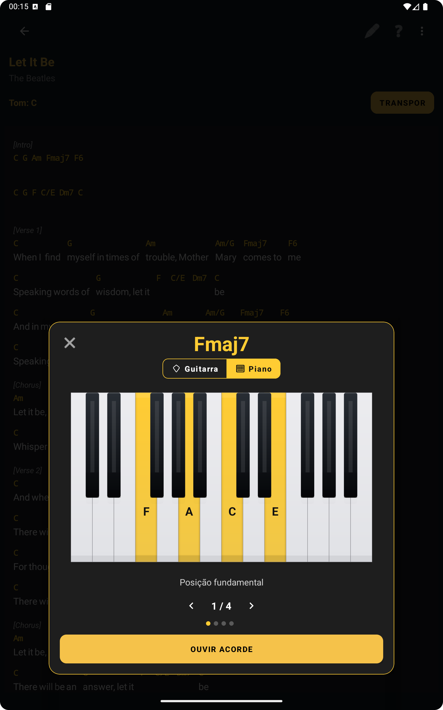
O mesmo acorde pode ser visto no piano, com as notas realçadas no teclado.
11. IMPORTAÇÃO DE MÚSICAS
O ChordFlow suporta importação por ficheiro, texto colado, link e OCR por imagem, com pré-visualização antes de guardar.
No menu principal, seleciona Import Songs .
Escolhe a origem da importação.
Revê o conteúdo detetado.
Ajusta título, artista, tom e formato se necessário.
Guarda a música no repertório certo.
Import file
Paste chord sheet
Import from link
Import PDF
Import from image (OCR)
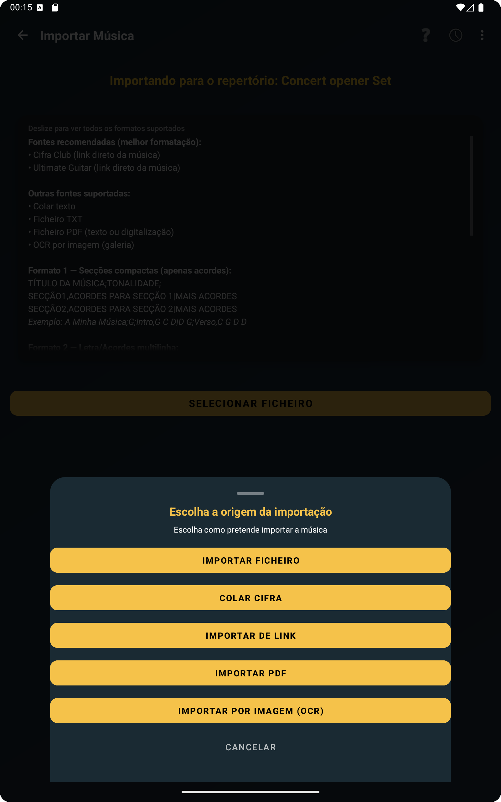
O menu de importação reúne todas as formas suportadas para adicionar músicas ao ChordFlow.
Exemplos de formatos
TXT em formato compacto: Separa as músicas com uma linha em branco.
WONDERFUL TONIGHT;G;INTRO,G D C D G D C D|VERSE,G D C D G D C D|CHORUS,C D G Em C D G|
BOHEMIAN RHAPSODY;Bb;INTRO,Bbmaj7 Gm7 Cm7 F7|VERSE,Bbmaj7 Gm7 Cm7 F7|BRIDGE,Bbmaj7 Eb Bbmaj7 Eb|CHORUS,F7 Bbmaj7 Ebmaj7 Bbmaj7
TXT em formato multilinha: Separa as músicas usando o marcador ===MUSIC_SEPARATOR===.
Hotel California (Dm)
Eagles
[Intro]
.Dm A7 C G A# F Gm A7
[Verse]
.Dm A7
On a dark desert highway...
...
===MUSIC_SEPARATOR===
Can't Help Falling in Love (G)
Elvis Presley
[Intro]
.G D Em C G D G
...
PDF: Funciona com PDFs com texto selecionável e também com PDFs digitalizados convertidos por OCR.
12. DICAS E TRUQUES
Usa o zoom no ecrã da música para adaptar a leitura às tuas necessidades.
Evita que o ecrã bloqueie durante ensaios e atuações.
Aproveita os gestos para navegar mais depressa no teu fluxo de trabalho.
Organiza as músicas em repertórios temáticos para acesso mais rápido em palco.
13. EXEMPLOS DE FICHEIROS
Experimenta os nossos exemplos de formatos. Descarrega os ficheiros abaixo e testa a funcionalidade de importação na app ChordFlow.
14. INSTALAÇÃO DA VERSÃO WINDOWS
A versão Windows do ChordFlow é distribuída por instalador, o que simplifica a instalação. Mesmo assim, poderás ver avisos do Windows Defender ou do SmartScreen porque a app não está assinada com um certificado comercial.
Descarrega o instalador no site.
Se aparecer o SmartScreen, clica em Mais informações .
Depois clica em Executar assim mesmo .
Segue o assistente de instalação.
No fim, o ChordFlow fica disponível no menu Iniciar do Windows.
Importante: O ChordFlow não recolhe dados pessoais e funciona totalmente offline.
Podes também consultar a nossa Política de Privacidade para mais informações.
15. USAR IA PARA GERAR FICHEIROS
Podes acelerar a preparação das tuas músicas com ferramentas como ChatGPT ou Gemini . Basta pedir à IA para gerar músicas num dos formatos reconhecidos pelo ChordFlow e depois importar o ficheiro para a app.
Para letras com acordes:
Imagine (C)
Para músicas por secções:
IMAGINE;C;INTRO,C F C F|VERSE,C F C F|CHORUS,F C G C